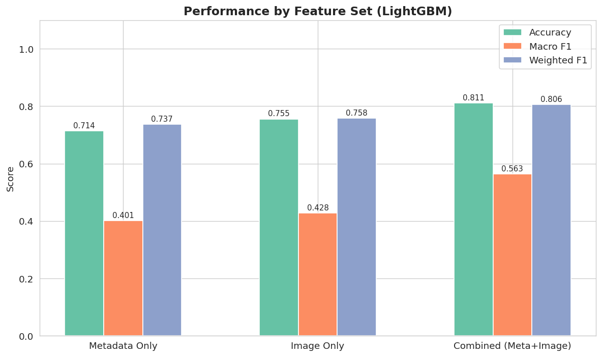
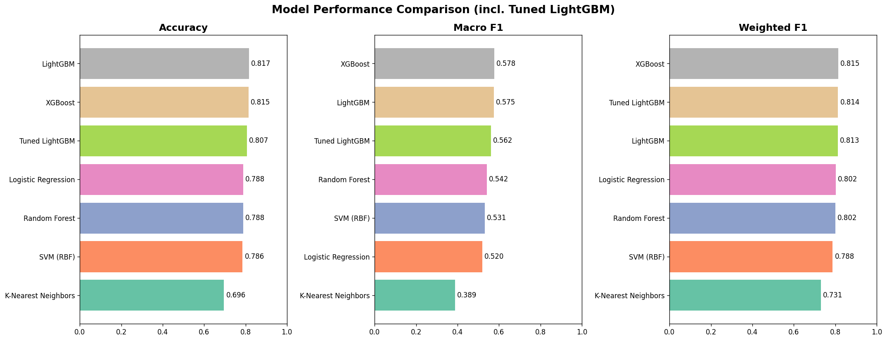
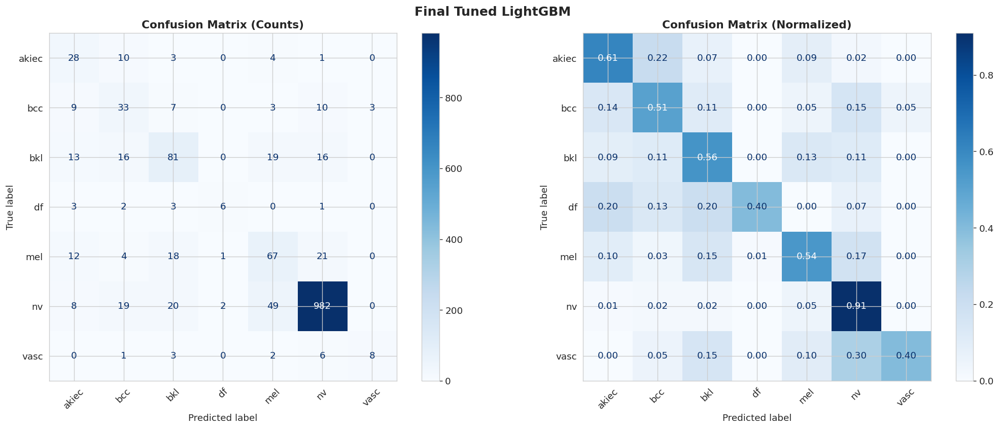
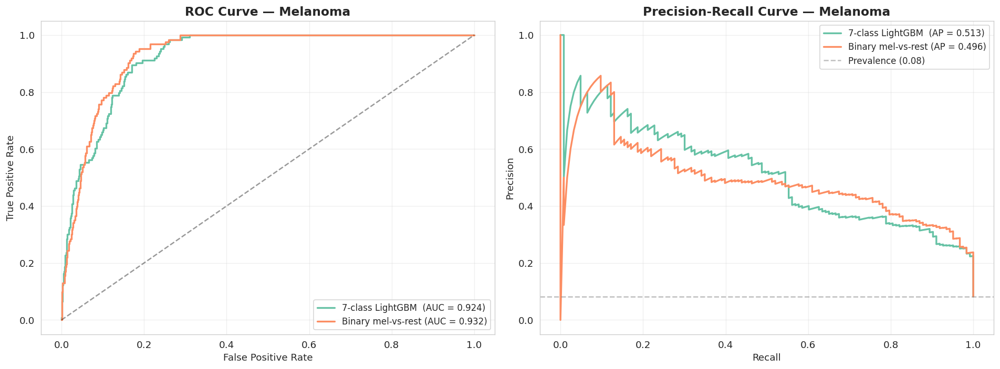

Proposal
Initial project scope, motivation, research questions, and planned methodology.
Open proposalIntroduction to Data Science - Team 07
A data science study combining clinical metadata, handcrafted dermoscopic image features, statistical testing, and machine learning to classify seven skin lesion categories and improve melanoma-focused screening behavior.
Combined metadata and handcrafted image descriptors produced the strongest overall feature set. The final tuned LightGBM model keeps high discrimination while reporting macro metrics for the imbalanced class distribution.
The generated figures summarize feature-set value, model ranking, error patterns, and the melanoma-specific operating point tradeoffs.

Metadata plus image features outperform either source alone on accuracy, macro-F1, and ROC-AUC.

XGBoost, LightGBM, and Random Forest provide the strongest tabular baselines.

The confusion matrix highlights where minority classes remain difficult under the seven-way setup.

The binary melanoma gate raises recall at the cost of precision, making the tradeoff explicit.
The repository is organized as reusable Python modules under src/ and thin command-line
scripts under scripts/, with notebooks and exported HTML reports as deliverables.
Read metadata, index dermoscopic images, and audit dataset availability.
Analyze class balance, age, sex, localization, and diagnostic type distributions.
Build handcrafted descriptors for color, texture, shape, and lesion appearance.
Compare metadata-only, image-only, and fused feature sets across baseline classifiers.
Evaluate threshold sweeps and a two-tier pipeline for melanoma-sensitive screening.
Course artifacts are included in the repository and can be opened directly from GitHub Pages.
Initial project scope, motivation, research questions, and planned methodology.
Open proposalIntermediate progress report with early analysis outputs and pipeline status.
Open milestoneComplete experiment narrative, model evaluation, and melanoma-focused analysis.
Open reportSlide deck for the final course presentation.
Download slides